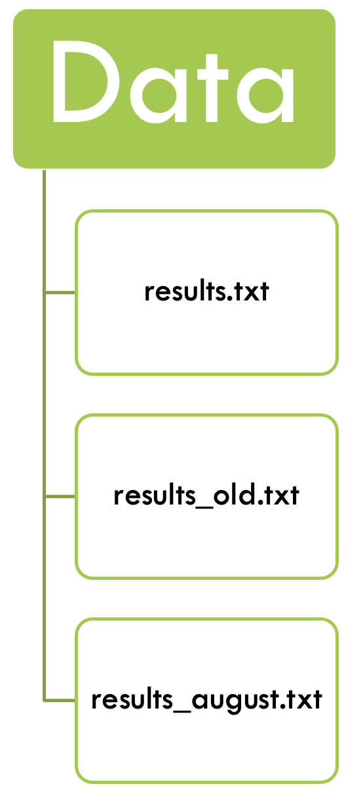

Data Management for Reproducible Research
What’s in it for me?
Data Life Cycle
When working with any type of data, it makes sense to sit down before the project starts to think through the different life stages of the data in your project. This will help counteract some of the problems that can arise when projects grow more organically, and will help consistency within the research group, ease collaboration, and mostly your future self that will understand what past-self has been up to in the project.
More and more funding agencies expect a Data Management Plan at some point of a project application. In there, you need to document that you have thought of, and planned for, the life cycle of your data.

FAIR principles
In the past, research data was often generated with one question in mind. Often, they would afterwards land in some drawer and be forgotten about. Nowadays researchers acknowledge that data can also be re-used, or combined with other data, to answer different questions.
The FAIR principles promote efficient data discovery and reuse by providing guidelines to make digital resources:

FAIR principles, in turn, rely on good data management practices in all phases of research:
- Research documentation
- Data organisation
- Information security
- Ethics and legislation
Reproducible research
Lucky for us, once we implement good data management practices, we will also increase the reproducibility of our analyses. Extensive documentation will increase faith in the outcome of analyses, and will help people (again, future-you) understand what has been done.
Last, but not least, reproducible research practices make project hand-overs smoother, when the next person already understands the structure of the project, and can rely on good documentation.
What data do we work with?
Bioinformatics is an interdisciplinary field of science that develops methods and software tools for understanding biological data, especially when the data sets are large and complex. (Wikipedia)
This data can come from a variety of different biological processes:

Early on, sequencing data was not readily available, but due to decreasing costs and increased computational power biological data is now being produced in ever increasing quantities:
At the same time, new technologies are being developed, and new tools that might or might not be maintained or benchmarked against existing tools. It’s the wild west out there!

Working with data
Often, with a new project, one sits down with the data, tries out things and see if they worked. A lot of bioinformatics is not being afraid to try things, and reading the documentation.
This traditional way of working with bioinformatics data can have merits and lead to new discoveries. However, in this course we would like to introduce you to a more structured way to make sense of your data.
Let’s have a look at a typical PhD student’s research project:
- They might analyse their data, and get some results.
- After talking with their supervisor they might get a few other samples from a collaborator, or need to drop them from the analyses due to quality concerns.
- They run the analyses again and get a different set of results.
- There might be a few iterations of this process, and then the reviewers require some additional analyses…
In the “end” we have something like this:

- There is a folder for the raw data, which does not get altered.
- Code is kept separate from data.
- Use a version control system (at least for code) – e.g. git.
- There should be a README in every directory, describing the purpose of the directory and its contents.
- Use file naming schemes that makes it easy to find files and understand what they are (for humans and machines) and document them.
- Use non-proprietary formats – .csv rather than .xlsx
Literate programming
Our hypothetical PhD student, even if taking into account the best practice tips from above, is still likely to run the same analyses over and over whenever the input data changes. Sometimes, this might be months, or even years, after the original analysis was performed.
Luckily, they can save their code snippets (with intuitive file names) and re-use the code from back then. This is often done with R-scripts, but can just as well be applied to bash scripts, python scripts etc.
In the past years, the development went even further and one can even combine code and documentation in the same document. The code is wrapped in so called chunks, or code cells, that are executable from within the document.
Debugging is twice as hard as writing the code in the first place. Therefore, if you write the code as cleverly as possible, you are, by definition, not smart enough to debug it. Brian Kernighan
Before the course you have already worked with one such notebook - Quarto. We will continue to work with it during this course.
- Document your methods and workflows.
- Document where and when you downloaded data.
- Document the versions of the software that you ran.
Version control
Now that our student has reproducible documents, with reasonable names, that can execute their analyses reliably over and over again, what happens if they modify their analyses? Will they end up again with different result files and their project sink down in chaos?
No, because there is version control, the practice of tracking and managing changes to files.
Again, before the course you worked through the basics of git, and how to use it with GitHub collaboratively. We will continue using git during the course as well.
Environment managers
Using git, our PhD student can now share their reproducible code with their colloaborators, or between systems. They can rest assured that the different versions of the notebook are tracked and can be checked out when necessary. But what about the bioinformatic tools? Can they also be shared easily?
Different computers can run on different operating systems, or can have different versions of databases installed. This can lead to conflicts between tools, or software versions and can impact code usability, or reproducibility.
Fortunately, smart people have developed environment managers such as conda, bioconda, or pixi. These tools find and install packages, so that the same package versions are being run between different computers. However, the code might still give different results on different operating systems.
During this course we will be building our own environments with Pixi - you’ll see how great it is not having to manually install tools anymore!
Containers in bioinformatics
But what if our PhD student needs to run their code on different operating systems?
They can use containers, that contain everything needed to run the application, even the operating system. Containers are being exchanged as container images, which makes them lightweight. Containers do not change over time, so the results will be the same today and in a few years. Everyone gets the same container that works in the same way.
In this course, you will have guessed it, we will learn about containers, where to get them and how to use them.
Workflow manager
Now our PhD student can use containers, or environments, to provide a uniform environment for their version controlled, wonderfully documented and reproducible code. Fantastic! But they still have to deploy, or at least monitor, their scripts manually.
Fortunately there are workflow managers that can integrate all of the above, submit your jobs for you, and even monitor and re-submit scripts after failure. They will automatically submit jobs for you, decreasing downtime and increasing efficiency.
Humans tend to do mistakes, especially when it comes to tedious or repetitive tasks. If you automate data handling, formatting etc. you are less likely to make mistakes like typos, or changing colors in images.
In this course, we will also cover a workflow manager, Nextflow and learn how to make our own workflow, and how to run already developed workflows.
Goal of the course
With this, we want to give you tools that will help you plan and carry out your research. These tools will make your work more efficient and more reproducible. No matter what kind of data you use, you will take something useful from this course.